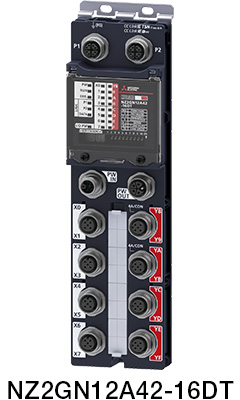

Network-related products |
Programmable Controllers MELSEC
CC-Link IE Line Up


Waterproof/dustproof Type (IP67) Remote Modules
CC-Link IE Field Network
Waterproof/dustproof type (IP67) remote modules
- Complies with IP67 rating. A control panel is no longer necessary, saving on hardware cost and space
- Supporting the maximum load current of 4 A/point, a large load can be directly driven

Input modules
Waterproof connector (screw lock)
| Model | Input type DC input |
Input points | Rated input voltage/current | Wiring type |
|---|---|---|---|---|
| NZ2GN12A4-16D | Positive common | 16 points | 24 V DC (7.3 mA) | 2- to 4-wire |
| NZ2GN12A4-16DE | Negative common | 16 points | 24 V DC (7.3 mA) | 2- to 4-wire |
Output modules
Waterproof connector (screw lock)
| Model | Output type Transistor output |
Output points | Rated load voltage/ Max. load current |
Wiring type |
|---|---|---|---|---|
| NZ2GN12A2-16T | Sink | 16 points | 12/24 V DC (2 A/point, 4 A/point, 12 A/common)*1 |
2-wire |
| NZ2GN12A2-16TE | Source | 16 points | 12/24 V DC (2 A/point, 4 A/point, 12 A/common)*1 |
2-wire |
I/O combined modules
Waterproof connector (screw lock)
| Model | Input type DC input |
Input points |
Rated input voltage/ current |
Output type Transistor output |
Output points |
Rated load voltage/ Max. load current |
Wiring type |
|---|---|---|---|---|---|---|---|
| NZ2GN12A42-16DT | Positive common |
8 points | 24 V DC (7.3 mA) |
Sink | 8 points | 12/24 V DC (2 A/point, 4 A/point, 12 A/common)*1 |
2- to 4-wire (input) 2-wire (output) |
| NZ2GN12A42-16DTE | Negative common |
8 points | 24 V DC (7.3 mA) |
Source | 8 points | 12/24 V DC (2 A/point, 4 A/point, 12 A/common)*1 |
2- to 4-wire (input) 2-wire (output) |
- *1.Maximum load current specifications may vary depending on the type of output terminal. For details, please refer to the relevant product manual.